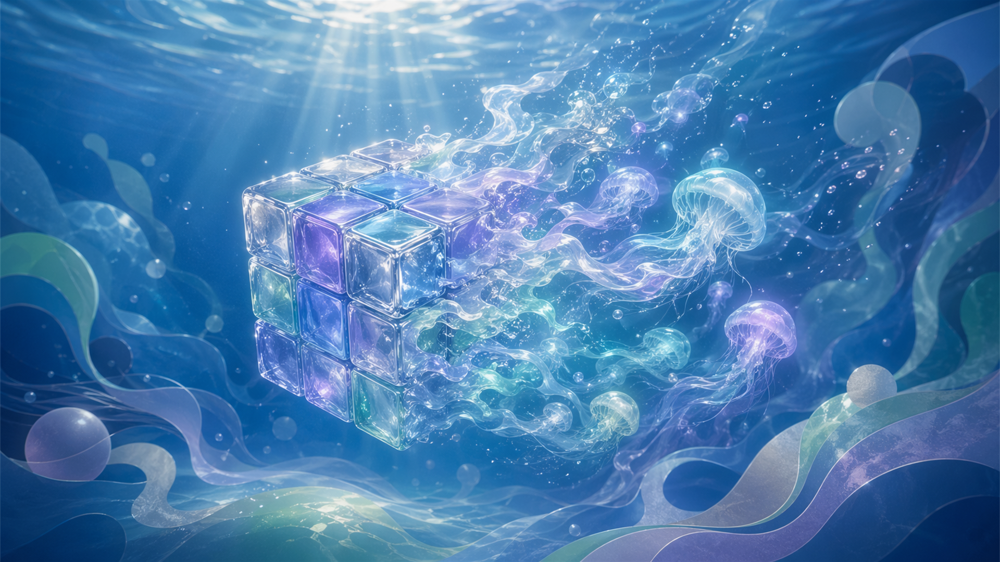
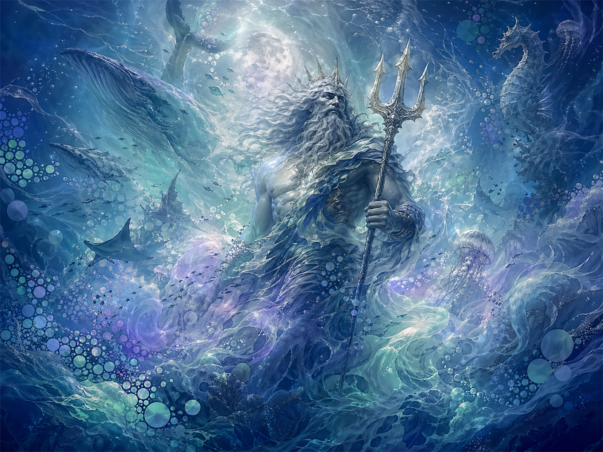

海王星
你的夢境頻道，靈魂的溶解之鏡

波賽頓・涅普頓 神話
海洋之主，夢境之源

希臘神話中，波賽頓（Poseidon）是宙斯的兄弟，統治浩瀚海洋。他的三叉戟一擊，能掀起滔天巨浪，也能平息怒海——象徵那股穿透現實、溶解界限的原始力量。
羅馬神話中同一原型以涅普頓（Neptune）之名出現，守護深不見底的海域。他代表無意識的深淵：那裡藏著人類最古老的恐懼、最美麗的幻象，以及靈感的無盡源泉。
海王星的神話核心是溶解——邊界消融，自我融入更大整體。它掌管藝術家的靈感狂潮、聖人的神秘經驗，也掌管成癮者難以自拔的逃離渴望。
「我不是消失，我是化為大海。」
直覺核心隱喻
你與宇宙頻道的連結強度
海王星是占星盤中最難具體描述的行星——因為它根本不想被具體描述。
它是濾鏡、是霧、是水下光折射。
海王星的三大隱喻：創作靈感（藝術家的頻道天線）、 神祕融合（冥想者的自我消融）、 逃離幻境（成癮與幻滅的兩面刃）
海王星在十二宮
夢境如何滲透你生命的不同領域
海王星所在的宮位，是你生命中最容易出現幻覺、靈感、逃避，同時也最有機會觸及神性的領域。 點擊卡片，驅散迷霧，探索深層意涵。
海王星在十二星座
世代靈性主題 · 約 14 年一個世代
海王星是世代行星，在同一星座停留約 14 年。它描述的不只是個人，而是整個世代共同擁有的靈性渴望與集體幻象。
海王星 × 45 相位矩陣
海王星與九大行星的全部相位解析
相位符號： ☌ 合相· ☍ 對分· △ 三分· □ 四分· ✶ 六分
真實星盤案例
海王星如何在名人命盤中現身
每日直覺抽卡
海王星塔羅 · 每日一次的靈感 Gacha
每日可抽一張，結果記憶在瀏覽器。點擊「喚醒直覺」，讓海王星傳遞今日訊息。
夢境日誌
每日記錄，連續解鎖潛意識圖鑑
記下今晨醒來的第一個意象、感受或片段。不需要完整，零碎也是訊息。
海王星實用指引
直覺練習 · 夢境工作 · 冥想路徑
- 晨起記錄夢境意象，不加詮釋
- 每日靜坐 5 分鐘，觀察內在聲音
- 注意「巧合」—海王星說那是訊息
- 藝術創作前放棄計畫，讓手帶路
- 在水邊冥想（浴缸、海邊、雨中）
- 床頭放日誌，醒來立刻記錄
- 記錄情緒感受，比情節更重要
- 尋找重複出現的符號
- 詢問夢中角色：你代表什麼？
- 月盈時重讀夢境，尋找模式
- 海洋呼吸法：4 吸 / 4 憋 / 8 呼
- 觀想自己緩緩沉入溫暖深海
- 溶解練習：感受身體邊界消失
- 慈悲冥想（metta）—海王星共鳴
- 聆聽 432Hz 或水流音景冥想
- 辨識「理想化」—看清，非消滅它
- 為逃避傾向設立邊界，而非壓制
- 藝術化表達成癮渴望（轉化）
- 定期接地：身體運動，土系活動
- 找土星型的導師或結構做錨點